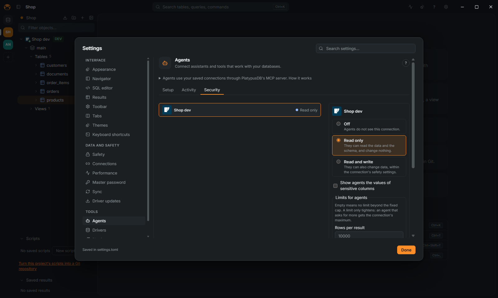

Use PlatypusDB from an agent
Claude Code, Codex, Cursor and other MCP clients can use your saved connections through PlatypusDB's MCP server. This page is the short path; every tool, limit and setting is in the reference, AGENTS.md.
Connect an agent
- Open Settings (
Ctrl+,) › Agents › Setup. - Find your client in the list (Claude Desktop, Claude Code, Codex, Cursor, Windsurf, Antigravity, Gemini CLI). Click Install: the app asks, saves a copy of the client's file beside it, and writes the server in it. For a client not listed, copy the entry by hand from the same page.
- Restart the client. It starts PlatypusDB itself with
--mcp; no window opens, and the app need not be open for reading.
Choose what each connection allows

- Settings › Agents › Security lists your connections. A connection's own form has the same choice, under Agents on its Appearance and safety page.
- Choose Off, Read only (the default) or Read and write.
Production and read-only connections are never more than read only: the panel says "Not available: production and read-only connections stay read only." A connection that is new from a shared project starts with Off on your computer.
Limits and masking
- In Security, Limits for agents caps, per connection, the rows, bytes and seconds of a result or statement, the calls per minute, and the estimated rows or plan cost of a read, above which the read is refused with its plan. Empty means no limit beyond the fixed caps.
- Sensitive columns read as
••••••for agents, as in the grid while masking. Tick Show agents the values of sensitive columns on a connection to show them. See Safety.
Changes wait for you
On a Read and write connection, each change an agent wants to run opens a dialog in the app with the statement, in the editor's colors and laid out on SQL databases (Show it as the agent sent it shows the text that runs, to the letter), the rows the database expects it to change and its plan. Click Refuse (the agent reads your reason), Allow once, or Allow for this session. After five minutes without an answer it is refused, and with the app closed the changes are refused. Settings › Safety › Ask before agents change data turns the questions off.
An agent can also propose, without running anything:
- SQL with
propose_sql: it opens in a new editor tab, for you to read and run. - Rows to insert, update or delete with
propose_edits: the table opens in its data viewer with them as pending changes, for you to save or discard (see Edit data).
See what agents did
Settings › Agents › Activity lists every tool call by session, with a filter and Export CSV. Their queries are in the history under the agent's name.
Above the list, Summary per agent and session (folded until you open it) adds up the calls the filters select: one row per agent and, under it, one per session, with the period, the calls, the tables read, the rows returned, the changes allowed, the changes refused and the errors. Export Markdown and Export HTML save it as a document to share; the HTML is one file with no script and nothing loaded from outside.
- A session is one start of the MCP server, as the log records it (a client that stays connected for days is one session).
- A change is a statement that changes data or the schema. It is allowed when it ran and refused when the connection's access, a safety setting or your answer in the app said no. A statement that failed for another reason counts as an error only.
- Tables read is exact for
sample_rowsandprofile_tableand for the sources ofquery_across_databases, and an estimate for a statement: the tables named afterFROMandJOIN. A statement a database other than SQL speaks (MongoDB, Redis, Elasticsearch, Cassandra) names none. - Nothing but names and counts is kept: no value, and statements stay masked as they are in the log.
- Calls made before this version recorded these figures show –, never a 0; the other figures count only the calls that have them, and the summary says so.
When it does not work
See Troubleshooting.